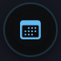
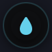
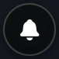

Your system
macOS
macOS 15 or later · Intel and Apple silicon. No notch? Mochi sits in a slim bar at the top.
Download .dmgMochi lives in your notch and keeps an eye on your messages, your music and your day. Reply, listen and chat without leaving what you were doing.
Download for MacEach app gets its own pill around the notch. You see what is playing, what is waiting and who needs you — before you switch windows.

Agendanext in 12 min
Water850 ml of 2.2 L
NotificationsquietMessages
Mattermost, Ato and WhatsApp messages drop down from the notch — photos, moving GIFs and voice notes included. Type a reply, copy the text, or open the conversation.
Try it: write a reply and press Enter →
Water
Tap the glass whenever you drink. Mochi fills up with you, keeps the day’s total and your streak, and reminds you at your own pace.
← Try it: tap the glass, change the portion, undo
Mochi
Pick a body, a face and a hat for Mochi, and a character of its own for each pill — so you always know who is talking.
Try it: this is Notchy’s own Settings — pick a look and every island on the page wears it →
Free, no account. Every build is made by GitHub Actions straight from the source.
macOS 15 or later · Intel and Apple silicon. No notch? Mochi sits in a slim bar at the top.
Download .dmgWindows 10 and 11 · 64-bit. Mochi sits in a corner of the screen you choose.
Download installerx86_64 · KDE Plasma, COSMIC, Hyprland and Sway. On GNOME it opens as a window.
Download AppImageRelease notes, older versions and checksums are on the releases page.
Notchy isn’t code-signed yet, so macOS and Windows ask once. Here’s how to say yes to Notchy alone — never by turning Gatekeeper, Defender or your antivirus off.
Open the .dmg and drag Notchy into Applications.
macOS refuses the first time: Apple hasn’t checked a build without a Developer ID.
System Settings → Privacy & Security, scroll to Notchy, click Open Anyway. Once per Mac.
It waves from the notch, then a short welcome sets your name, look and tools.
Prefer the terminal for step 3? This clears the download flag on Notchy only.
xattr -dr com.apple.quarantine /Applications/Notchy.appIt adds Notchy to the Start menu. Remove it any time from Settings → Apps.
SmartScreen says “Windows protected your PC” because the build is new and unsigned. More info → Run anyway.
Use the portable .zip: unzip it somewhere you own and run Create shortcuts.cmd.
It appears in the corner you pick, and the welcome walks you through the rest.
The AppImage runs anywhere. The .deb and .rpm install like any other package.
Mark the AppImage executable and open it — the command is below.
Over your panel on KDE Plasma, COSMIC, Hyprland and Sway; a regular window on GNOME.
Anything you connect is kept in the Secret Service — GNOME Keyring or KWallet.
Make the AppImage runnable and open it:
chmod +x Notchy-Linux-*.AppImage && ./Notchy-Linux-*.AppImageNotchy talks only to the services you connect. Nothing about you leaves your computer for anyone else.
Notchy is built without an Apple Developer ID, so Gatekeeper asks before the first launch. Click Open Anyway in System Settings → Privacy & Security, once. That trusts Notchy and nothing else — never turn Gatekeeper off system-wide.
Every build is made in the open by GitHub Actions from the commit its release names, and the release links the run. On a Mac, codesign --verify --deep --strict /Applications/Notchy.app confirms the bundle is whole. Linux releases carry SHA256SUMS.
No. On a Mac without one, or on an external display, Mochi sits in a slim bar at the top of the screen. With several displays, the island follows your cursor.
Notchy checks for new versions on its own and tells you in the notch when one is ready. You choose when to restart.
Yes and yes. Notchy is open source under GPL v3, on GitHub. The Mac app builds with xcodegen and xcodebuild; Windows and Linux are a Tauri app in the windows/ folder.
Free and open source. No account.
Stuck? Support · Full first-launch guide · All releases